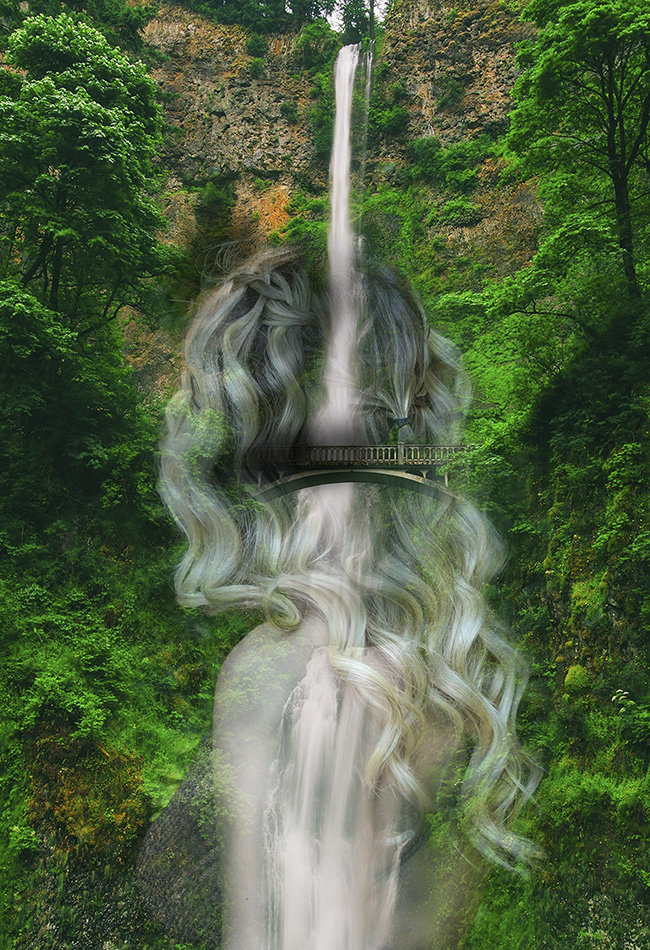

Double Exposure

In this project I used Adobe Photoshop to create a "double-exposure" photo. I used an image of a waterfall in a forest and superimposed it with an image of myself. The inspiration for this project was the idea of the human connection to nature, drawing on the idea of a "Mother Earth" figure. In the photo, there are many points at which the viewer cannot tell where the nature photo and the photo of myself begin, making it appear that they are one.